Seated Seated partial standLean forward, nose over toes, and lift your hips just off the seat.
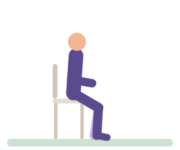
Level 1 Sit to stand, high chairHands on your thighs to help. Stand tall, then sit back slowly.Level 2 Sit to standArms crossed, feet flat. Stand up tall, then lower slowly to the seat.
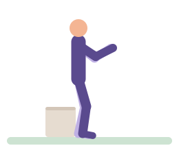
Level 3 Box squatSit back until you just touch the box, then drive up through your heels.
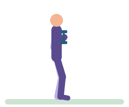
Level 4 Goblet squatHold the weight at your chest, elbows down. Sit between your heels.Level 5 Slow goblet squatThree seconds down, a short pause, then stand.
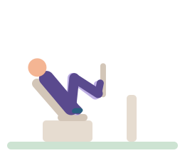
Level 6 Leg pressPress the plate away without locking your knees, then let it come back slowly.
Hinge
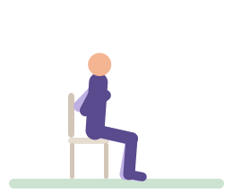
Seated Seated good morningArms crossed, back long. Tip forward from your hips, then sit tall.
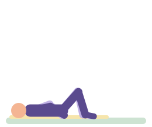
Level 1 Glute bridgeSqueeze your bottom and lift your hips until you're in a line from knees to shoulders.
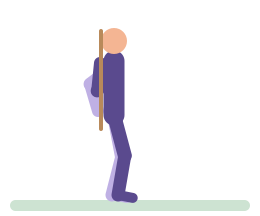
Level 2 Broom hingeKeep the handle touching your head, back and bottom as you hinge forward.
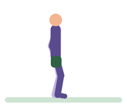
Level 3 Backpack Romanian deadliftSoft knees. Slide the bag down your thighs, hips back, then stand tall.
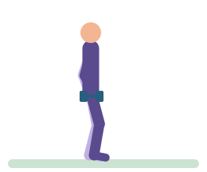
Level 4 Dumbbell Romanian deadliftHips back, weights close to your legs. Stop when you feel the backs of your thighs.
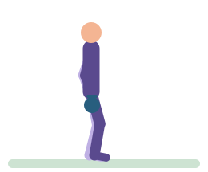
Level 5 Kettlebell deadliftBell between your feet. Push the floor away and stand up tall.
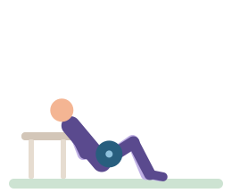
Level 6 Hip thrustUpper back on the bench, chin tucked. Drive your hips up and squeeze.
Push
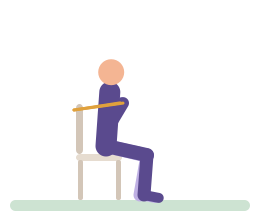
Seated Seated band chest pressBand round the chair back. Press forward until your arms are long, then slowly return.
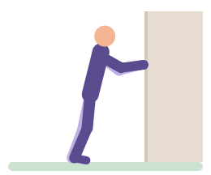
Level 1 Wall press-upHands on the wall at shoulder height. Bend your elbows and bring your chest towards it.
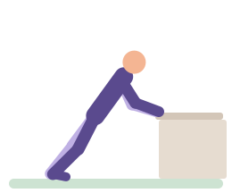
Level 2 Counter press-upHands on the edge, body in one line. Lower your chest to the counter.
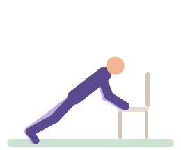
Level 3 Chair press-upChair against a wall. Hands on the seat, lower with control.
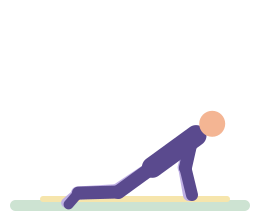
Level 4 Knee press-upKnees down, hips in line. Lower your chest between your hands.
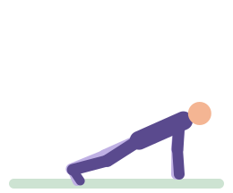
Level 5 Press-upBody like a plank. Lower until your chest is just above the floor.
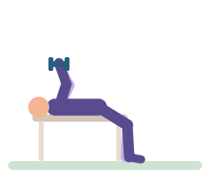
Level 6 Dumbbell bench pressFeet flat. Lower the weights to the sides of your chest, then press up.
Overhead press
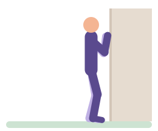
Level 1 Wall slideForearms on the wall. Slide them up as high as is comfortable, then back down.
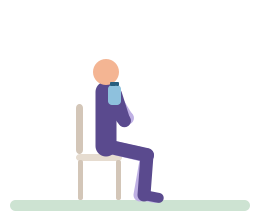
Level 2 Seated bottle pressSit tall. Press the bottles overhead, then lower them to your shoulders.
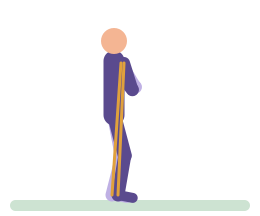
Level 3 Band overhead pressStand on the band. Press straight up, ribs down, then lower slowly.
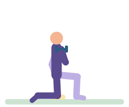
Level 4 Half-kneeling dumbbell pressOne knee down, squeeze that side's bottom. Press up, then lower with control.
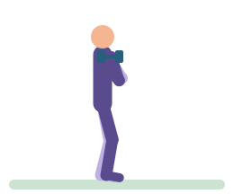
Level 5 Standing dumbbell pressFeet hip-width, ribs down. Press the weights overhead, then lower to your shoulders.
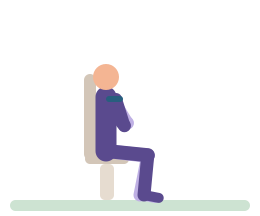
Level 6 Machine shoulder pressBack against the pad. Press the handles up, then lower slowly.
Row
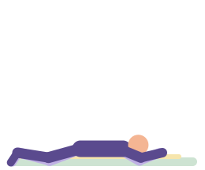
Level 1 Prone Y raiseLying face down, arms in a Y. Lift your arms a little, forehead stays low.
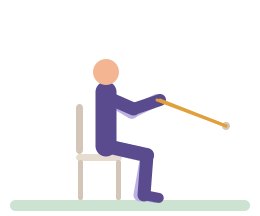
Level 2 Seated band rowSit tall. Pull your elbows back and squeeze your shoulder blades.
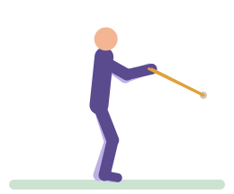
Level 3 Standing band rowSoft knees, chest proud. Pull your elbows past your ribs.
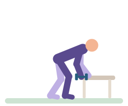
Level 4 One-arm dumbbell rowHand on the bench, back flat. Pull the weight to your hip.
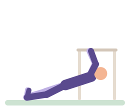
Level 5 Table rowUnder a sturdy table, heels down, body straight. Pull your chest to the edge.
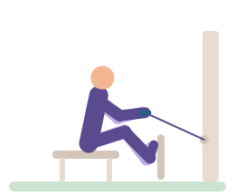
Level 6 Seated cable rowSit tall, knees soft. Pull the handle to your ribs, then let your arms go long.
Pull down
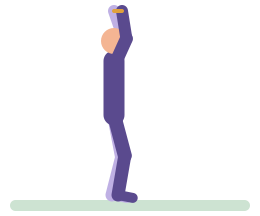
Level 1 Overhead band pull-apartArms up, band taut. Pull it apart and down behind your head.
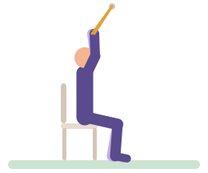
Level 2 Seated band pull-downBand over the top of a door. Pull your elbows down to your sides.
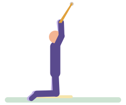
Level 3 Kneeling band pull-downTall kneeling, bottom squeezed. Pull your elbows down and back.
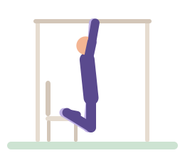
Level 4 Assisted pull-upFeet on the chair to take some weight. Pull your chest up towards the bar.
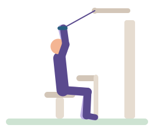
Level 5 Lat pull-downThighs under the pad. Pull the bar to your upper chest, then let it rise slowly.
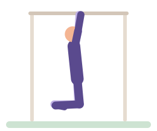
Level 6 Chin-upHang long, then pull until your chin clears the bar. Lower all the way.
Lunge and step
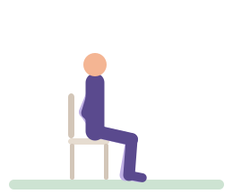
Seated Seated knee extensionSit tall. Straighten one knee, pause, and lower slowly.
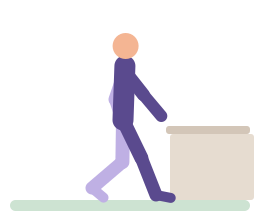
Level 1 Supported split stanceOne foot forward, hand on the counter. Bend both knees a little and hold.Level 2 Supported split squatLower your back knee towards the floor, then push back up.
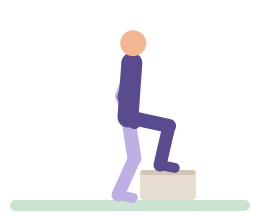
Level 3 Step-upWhole foot on the step. Push through it to stand up, then step down.
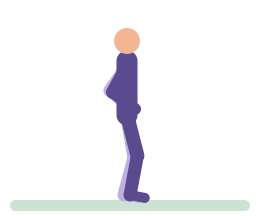
Level 4 Reverse lungeStep back and lower your back knee towards the floor. Push through your front foot to return.
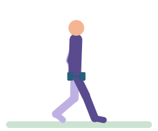
Level 5 Dumbbell split squatWeights by your sides. Drop your back knee straight down, then stand.
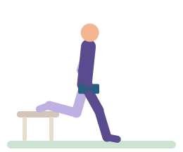
Level 6 Bulgarian split squatBack foot on the bench. Lower until your front thigh is nearly level.
Carry
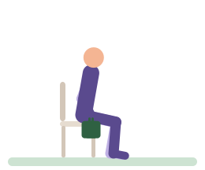
Seated Seated holdSit tall with a bag in each hand. Shoulders back and down, breathe and hold.
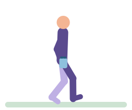
Level 1 Bottle walkA bottle in each hand. Walk tall, slow and steady.
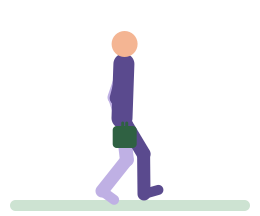
Level 2 Shopping bag carryA bag in each hand, shoulders down. Walk tall and keep the bags still.
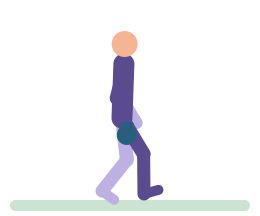
Level 3 Suitcase carryWeight in one hand. Don't let it pull you sideways.
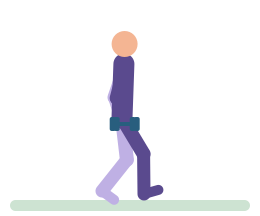
Level 4 Farmer's carryHeavy weights, tall posture, small steady steps.
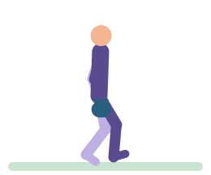
Level 5 Kettlebell carryGrip hard, shoulders down, walk slowly.
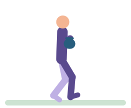
Level 6 Front-rack carryBells at your chest, elbows tucked. Breathe and walk.
Core
Seated Seated lean-backArms crossed, sit tall. Lean back a little, hold, then come forward.Level 1 Heel slideLower back gently pressed down. Slide one heel away, then back.Level 2 Dead bugBack flat. Reach one arm back and the opposite leg out, then swap.Level 3 Incline plankHands on the counter, body in one line. Breathe and hold.Level 4 Knee plankForearms down, knees down, hips in line with your shoulders. Hold.Level 5 Plank with reachHold the plank and reach one arm forward without letting your hips rock.Level 6 Ab wheel rolloutFrom your knees, roll out only as far as you can keep your back flat.
Side and rotation
Seated Seated band press-outBand anchored to one side. Press it out in front and don't let it turn you.Level 1 Seated marchSit tall, tummy braced. Lift one knee, lower, then the other.Level 2 Bird dogOn all fours. Reach one arm forward and the opposite leg back, then swap.Level 3 Knee side plankOn your side, knees bent. Lift your hips and hold.Level 4 Pallof pressBand anchored at your side, chest height. Press out and resist the turn.Level 5 Side plankElbow under shoulder, feet stacked. Lift your hips into a straight line.Level 6 Half-kneeling chopPull the band from high behind you down across your body, hips still.
Balance
Seated Seated reachSit tall, feet flat. Reach forward as far as feels steady, then sit back.Level 1 Feet together, with supportFeet together, a hand near the counter. Stand tall and breathe.Level 2 Heel-to-toe stand, with supportOne foot directly in front of the other. Hold steady.Level 3 Single-leg stand, with supportLift one foot, a fingertip on the counter. Hold.Level 4 Heel-to-toe walkHeel touches toe with every step. Eyes ahead, arms out a little.Level 5 Single-leg reachStanding on one leg, tip forward and reach, back leg long. Return to tall.Level 6 Single-leg stand on a cushionOne foot on the cushion, arms out a little. Hold steady.
Calf
Level 1 Seated heel raiseFeet flat. Lift your heels as high as you can, then lower slowly.Level 2 Standing heel raiseFingertips on the counter. Rise onto the balls of your feet, then lower.Level 3 Slow heel raise on a stepBalls of your feet on the edge. Lower your heels slowly below the step, then rise.Level 4 Single-leg heel raise, supportedOne foot hooked behind. Rise up, then lower with control.Level 5 Single-leg heel raise, 3-2-3Three seconds up, hold for two, three seconds down.Level 6 Weighted single-leg heel raiseWeight in your free hand. Full range, slow on the way down.